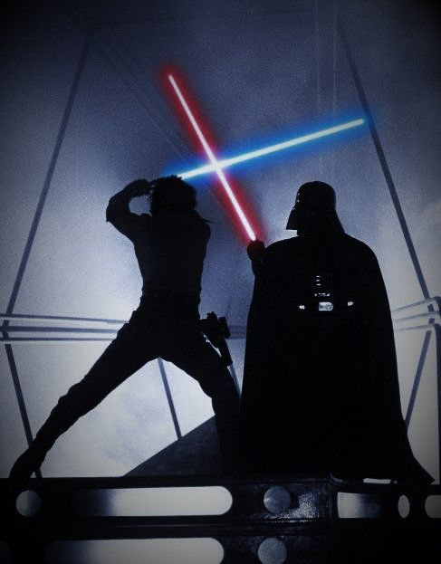

Star Wars
para quem não entende nadaTalvez você ainda seja leigo no assunto "Star Wars" mas tenho certeza que você conhece o famoso Darth Vader, sabe o que é uma luta com sabres de luz e já ouviu a falar sobre o “lado negro da força”.
"Do que se trata? De uma história que se passa há muito tempo, em uma galáxia muito distante, formada por planetas de todos tipos: desérticos, super habitados e selvagens, mas todos com a licença científica para ter a mesma gravidade e atmosfera igualmente habitáveis."
"O centro da trama é uma disputa política entre um império tirano e ditatorial e um grupo libertário. O enredo é permeado pela tragédia pessoal de Anakin Skywalker, um jedi (do bem) que sucumbe ao Lado Sombrio da Força (do mal) se transformando no vilão Darth Vader, que é um dos líderes do Império Galático."
"Afinal, quem são os Jedi? São defensores da paz e da justiça e usam o poder do lado luminoso da força. Seus inimigos, os Sith, a controlam pelo sombrio, ou negro, associados à raiva e à vingança. A Força é uma espécie de super poder, sobre a qual apenas alguns indivíduos têm domínio."
"O medo é o caminho para o lado negro. O medo leva a raiva, a raiva leva ao ódio, o ódio leva ao sofrimento."
- Personagens principais:
- Mestre Yoda
- Obi-Wan Kenobi
- Darth Vader
- Luke Skywaler
- Princesa Léia
- Han Solo
- Chewbacca
"A história é protagonizada por humanos, alienígenas (não necessariamente verdes, nem com antenas, nem malvados) e robôs. Espaçonaves velozes permitem viagens acima da velocidade da luz entre os planetas e as armas de laser, tanto espadas, como rifles, são usadas nos combates."
"Há 9 filmes: os três primeiros lançados entre 1977 e 1983. Entre 1999 e 2005 foram lançados outros três, mas que contavam a origem daquela primeira história. Ou seja, cronologicamente, os filmes de 2015, 2017 e 2019 continuam a história terminada em 1983, enquanto os de 99 a 2005 precedem o filme de 1977"
Textos: Entenda Star Wars